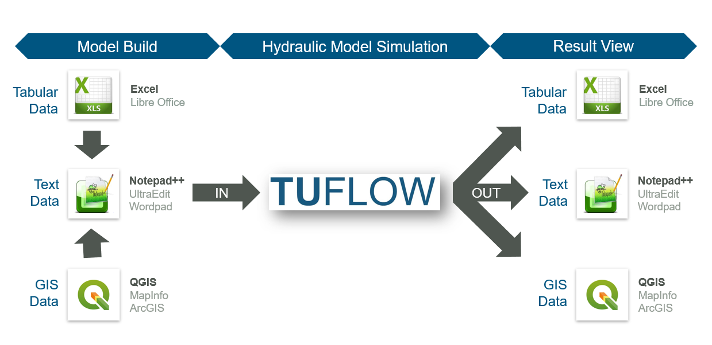
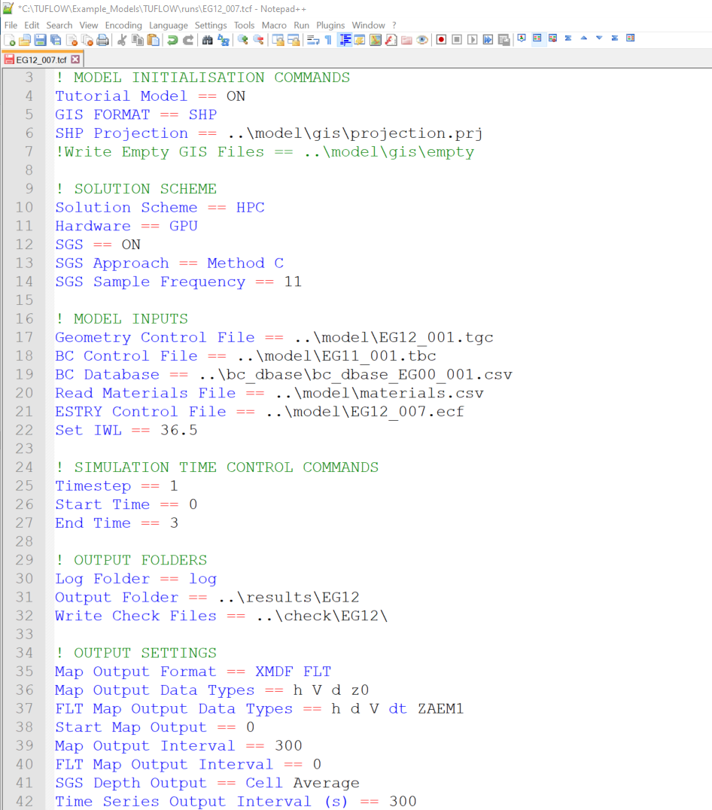
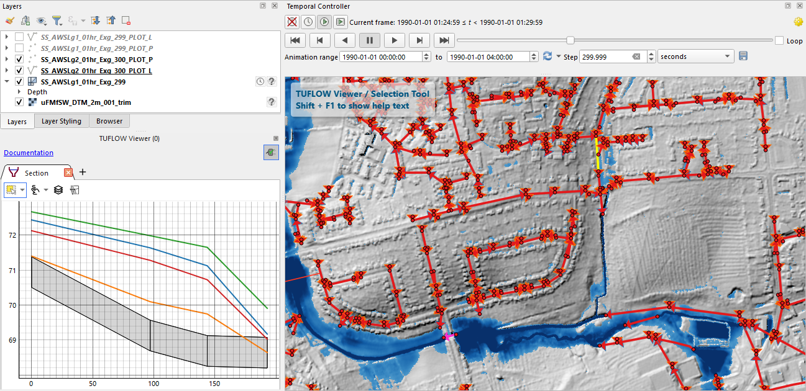
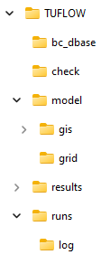
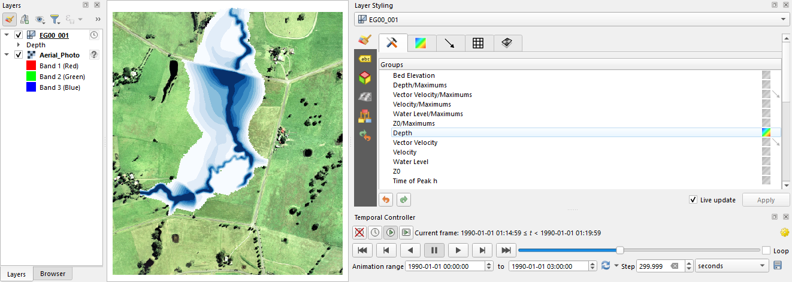

| Software Type | Suggested Software |
|---|---|
Text Editor |
UltraEdit / TUFLOW Wiki UltraEdit Tips Notepad++ / TUFLOW Wiki Notepad++ Tips Textpad / TUFLOW Wiki Textpad Tips Visual Studio Code Other: Any text editor can be used for creating TUFLOW control files, including the Microsoft Windows default, Notepad. However, the above listed editors are recommended. They allow for advanced options, such as syntax highlighting of TUFLOW control files and launching TUFLOW simulations from the text editor. |
Spreadsheet Software |
|
GIS Platforms |
QGIS (TUFLOW Wiki QGIS Tips) with QGIS TUFLOW Plugin. The QGIS TUFLOW Plugin provides a range of pre- and post- processing tools, and dynamic viewing of 1D and 2D results in TUFLOW Viewer. ArcGIS Pro (TUFLOW Wiki ArcGIS Tips) with Spatial Analyst for the creation of model inputs and viewing of static results. Dynamic viewing of 1D and 2D results is not available in ArcGIS. MapInfo Professional (TUFLOW Wiki MapInfo Tips) for the creation of model inputs and viewing of static results. Dynamic viewing of 1D and 2D results is not available in ArcGIS or MapInfo. QGIS (TUFLOW Wiki QGIS Tips), SMS (TUFLOW Wiki SMS Tips) or WaterRIDE are recommended to address these limitations. |
Other Software |
2 Getting Started
2.1 How to Build Your First Model
TUFLOW includes a wide range of self-education resources to aid new users. Available options include online tutorials, example models, demonstration models and eLearning modules. All models included or constructed when completing these self-education options have been designed using a licence-free mode. As such, there is no need to purchase a software licence to learn TUFLOW.
All TUFLOW self-education resources are fully supported via the TUFLOW Support Services, and support@tuflow.com can be contacted for support.
As an alternative to self-education, paid online and in-person training classes are also available for learning under the guided instruction of a TUFLOW expert. Courses are advertised via the TUFLOW Website Training Catalogue. For further information on paid training options please contact training@tuflow.com.
2.1.1 Tutorial Models
A number of free Tutorial Models are available for download and are documented in the TUFLOW Wiki Tutorial Introduction. Current tutorials include:
- Module 1 - 2D Base Model
- Module 2 - Topography Updates
- Module 3 - 1D Culverts
- Module 4 - 2D Bridges
- Module 5 - Integrated Urban Drainage
- Module 6 - Direct Rainfall
- Module 7 - Quadtree
- Module 8 - Scenario Management
- Module 9 - Event Management
- Module 10 - Dam Break
- Module 11 - 1D Open Channel
The tutorials have been created using QGIS as the model development environment. It is strongly recommended that new users complete our free Introduction to QGIS for TUFLOW eLearning beforehand.
2.1.2 Example Models
Free Example Models are documented and are available for download via the TUFLOW Wiki TUFLOW Example Models. The example model dataset includes over 150 standalone models demonstrating the most commonly used TUFLOW features. This education resource is intended for experienced modellers wishing to further develop their skills following completion of the Tutorial Models. Unlike the tutorials, this dataset does not include step-by-step instructions. Users of this dataset are expected to have a basic knowledge TUFLOW, and have suitable skills to open the model files by referencing the TUFLOW Control File (TCF) referenced in the example model catalogue list. The catalogue list on the TUFLOW Wiki has been separated into the following sub-sections:
- Project initiation
- Model units
- Solver options
- Output options
- Boundary condition options (inflows, outflows and losses)
- Topography features (static and dynamic topography changes, sub-grid sampling options)
- Structures (bridges, weirs, culverts, operational controls)
- Multiple domain model design (1D/2D and 2D/2D)
- Bulk simulation Management
- Advection dispersion.
- Non-Newtonian
- Mathematical Operations
2.1.3 Demonstration Models
A series of demonstration models were developed as part of three “challenges” issued prior to the 2012 Flood Managers Association (FMA) Conference in Sacramento, USA. The objective was to establish the variation in flood extents using different 2D software and modellers. Anyone could submit results, and the results were presented anonymously at the 2D Modelling Symposium held on the first day of the conference.
The three Challenge Models were:
- Challenge 1: An urban environment with a concrete lined main channel and numerous structures.
- Challenge 2: A coastal floodplain with two river entrances to the ocean during a flood.
- Challenge 3: A levied river within an alluvial fan in an arid, irrigated area.
The models developed using TUFLOW were created within a week and run for various scenarios. Positive feedback was received on TUFLOW’s accuracy, and on the impressively short turnaround time required to build the models and run the simulations. The Free Demonstration Models are documented and are available for download from the TUFLOW Wiki FMA Challenge Models Introduction.
2.1.4 Licence Free Demo Mode
As of the 2016-03 release, setting Demo Model== ON within the TCF allows users to set up and simulate small-scale test models using their own datasets, but without a licence. The limits associated with the licence-free demo mode are:
- The total number of 2D cells may not exceed 100,000 – this is the number of cells within the bounding rectangle.
- The total number of active 2D cells may not exceed 30,000.
- The total number of 1D channels may not exceed 100.
- There is only one (1) 2D domain.
- Simulation clock time cannot exceed 10 minutes.
2.1.5 eLearning Modules
TUFLOW eLearning is a suite of online guided training modules available on-demand. The eLearning includes step-by-step lessons comprising a combination of written notes, background content videos, demonstration videos and hands-on exercises. The list of available eLearning modules is growing year-on-year. The current available catalogue includes:
- Introduction to QGIS for TUFLOW
- Introduction to 2D Modelling TUFLOW
- Introduction to Python for TUFLOW
- Introduction to GDAL for TUFLOW
- 2D Topography and Modification Options
- 1D Culvert and 2D Bridge Modelling
- Bulk Simulation Management
Access the eLearning via the TUFLOW Website Training Catalogue.
2.1.6 Instructor Led TUFLOW Training Courses
As an alternative to self-education, paid online and in-person training classes are also available to learn under the guided instruction of a TUFLOW expert. Scheduled courses are advertised via the TUFLOW Website Training Catalogue. For further information on paid training options please contact training@tuflow.com.
2.2 The TUFLOW Modelling Concept
The fundamental software necessary for building a TUFLOW model and viewing simulation results are:
- Text editor. Used to create and edit TUFLOW simulation control files. The control files list all the simulation commands and file path references to the above mentioned GIS and tabular datasets.
- Spreadsheet software. Used for time-series and other non-geographically located data.
- GIS software. Used to create, modify and manage all geographic inputs and to view simulation results.

User survey results consistently indicate that the majority of TUFLOW modellers globally use the text editor / spreadsheet / GIS working environment approach. Within that framework, the most popular supporting software combination is Notepad++, Excel and QGIS (with the free QGIS TUFLOW Plugin). Due to the dominant usage of these supporting software packages, detailed information for Notepad++ and QGIS is provided in Section 2.2.1 and Section 2.2.2. Please note, modellers are not required to use Notepad++, Excel and QGIS. Other alternative supporting software may be used instead. A complete list of commonly used options is outlined in Table 2.1.
For modellers preferring to work predominantly within a Graphical User Interface (GUI) environment instead of GIS, the following TUFLOW GUI options are also available:
2.2.1 Notepad++
Notepad++ is a free text editor available from https://notepad-plus-plus.org/downloads/. The Notepad++ functionality listed below makes it well suited as an editor for creating and updating TUFLOW control files. Click on the respective TUFLOW Wiki links in each bullet point for more information:
- Syntax Highlighting: Colour coding of TUFLOW control files, shown in Figure 2.2.
- Simulation Execution: The ability to start a TUFLOW simulation directly from Notepad++.
- File Navigation: The ability to open files based on the relative reference provided in a TUFLOW control file. For example a geometry control file (.tgc) can be opened directly from the TUFLOW control file (.tcf) without having to locate it in Windows Explorer.

2.2.2 QGIS / TUFLOW Viewer
QGIS is free, open source GIS software available from https://www.qgis.org/. It is an official project of the Open Source Geospatial Foundation (OSGeo). It runs on Linux, Unix, Mac OSX, Windows and Android and supports numerous vector, raster, and database formats and related functionalities.
For users wishing to adopt QGIS as the model development or result viewing environment, we strongly recommend completing our free Introduction to QGIS for TUFLOW eLearning. It teaches how to configure QGIS for TUFLOW modelling and provides an entry level overview on how to use the software.
We also recommend installing the free QGIS TUFLOW Plugin. The QGIS TUFLOW Plugin includes a suite of tools built to increase TUFLOW workflow efficiency. Installation and use instructions are provided in the QGIS Tips and Tricks section of the TUFLOW Wiki Installation of Plugin.
TUFLOW Viewer is included in the QGIS TUFLOW Plugin. As the name suggests, TUFLOW Viewer upgrades the QGIS Map Window to become a complete dynamic interactive TUFLOW simulation result viewer. This addition to QGIS makes the the programme’s functionality comparable to commercial GUI software. For further information, refer to the TUFLOW Viewer Documentation.

2.3 Installing and Running TUFLOW
2.3.1 TUFLOW Downloads and Installation
The current TUFLOW release, Manual and Changelog are available via the TUFLOW website Downloads page. All past TUFLOW versions are available from the Downloads Archive.
Section 13.3 provides more information on downloading and installing TUFLOW.
Detailed step-by-step instructions for new users are also provided on the TUFLOW Wiki New User Installation Guide.
2.3.2 TUFLOW Licencing
A TUFLOW licence is required to run TUFLOW, but is not required when using third-party software such as a GIS, text editor or GUI. Email sales@tuflow.com for a quote to purchase a TUFLOW licence. For further licencing information, refer to Section 13.4.1 and the TUFLOW installation instructions on the TUFLOW Wiki Licencing Page.
TUFLOW can be used licence free for the TUFLOW Tutorials (Section 2.1.1), Example models (Section 2.1.2) or when running TUFLOW using Demo Mode (Section 2.1.4).
All TUFLOW use is governed by the TUFLOW Products End User Licence Agreement. By installing and/or using a TUFLOW Product you agree to the terms of the TUFLOW Products End User Licence Agreement.
2.3.2.1 3rd Party Software Libraries
TUFLOW and its utilities rely on several 3\(^{rd}\) party software libraries which have suitable licences. These libraries, with links to their respective licence agreements, are listed below:
2.3.3 Performing Simulations
For details on running TUFLOW simulations, please refer to Section 13.4.2.
2.4 Folders, File Types and File Naming
2.4.1 Folder Structure
Table 2.2 presents the recommended set of sub-folders to be set up for a TUFLOW model. Any folder structure may be used; however, it is strongly recommended that a system similar to that below be adopted. For large modelling jobs with many scenarios and simulations, a more complex folder structure may be warranted, though should be based on that shown below.

| Sub-Folder | Description |
|---|---|
bc_dbase |
Contains boundary condition database(s) and time-series data for 1D and 2D domains. |
check |
Contains the GIS and other check files to carry out quality control checks (use Write Check Files command). |
model |
Contains the .tgc, .tbc and other model data files, except for the GIS layers and grid inputs which are located in the model\gis folder and model\grid folder respectively (see below). |
model\gis |
Contains the GIS vector layers that are inputs to the 2D and 1D model domains. |
model\grid |
Contains the GIS raster layers that are inputs to the 2D model domains. |
results |
Contains the result files (use Output Folder command). |
runs |
Contains the .tcf and .ecf simulation control files. |
runs\log |
Contains the log files (e.g. .tlf) and _messages.shp files (use Log Folder command) |
Note:
- Files can be located relative to the file they are referred from. For example, the path and filename of a file referred to in a .tgc file is sourced relative to the .tgc file (not the .tcf file). See also Section 4.1.2 for a discussion on absolute and relative file paths.
- Whilst TUFLOW readily accepts spaces and special characters (such as ! or #) in filenames and paths, other software may have issues with these. It is recommended that spaces and other special characters not be used in the simulation path and filename without prior testing.
- Filenames and extensions are not case sensitive in any TUFLOW control files.
2.4.2 File Types
The most common file types and their extensions are listed in Table 2.4. These files are classified into the following use categories:
- Control Files: used for directing inputs to the simulation and setting parameters. The style of input is very simple, free form commands, similar to writing down a series of instructions. This offers the most flexible and efficient system for experienced modellers. It is also easy for inexperienced users to learn.
- Data Input Files: primarily GIS layers defining the spatial inputs and comma-delimited files generated using spreadsheet software for tabular data, such as boundary condition time-series entries.
- Data Output Files: containing the 2D and 1D hydraulic simulation result outputs.
- Check Files: are produced at the beginning of a TUFLOW simulation so modellers and reviewers can readily check that the constructed model is as intended. Advanced models draw upon a wide variety of data sources. The check files represent the final model dataset which is used for the simulation calculations. For more details, see the TUFLOW Wiki Check Files.
| File | Extension | Description | Use Category | Format |
|---|---|---|---|---|
TUFLOW Simulation Control File |
.tcf |
Controls the data input and output for 2D or 1D/2D simulations. The filename (without extension) is used for naming all 2D domain files. |
Control File |
Text |
TUFLOW Boundary Conditions Control File |
.tbc |
Controls the 2D boundary condition data input. |
Control File |
Text |
TUFLOW Event File |
.tef |
Database of .tcf and .ecf file commands for different events. |
Control File |
Text |
TUFLOW Geometry Control File |
.tgc |
Controls the 2D geometric or topographic data input. |
Control File |
Text |
TUFLOW Quadtree Control File |
.qcf |
Controls the construction of a Quadtree grid. |
Control File |
Text |
ESTRY Simulation Control File |
.ecf |
Controls the data input and output for 1D domains. The filename (without extension) is used for naming all 1D output files. |
Control File |
Text |
TUFLOW Operating Controls File |
.toc |
Contains operating rules that can be applied to hydraulic structures, pumps and other controllable devices modelled as 1D elements. Each set of operating rules is contained within a Control definition. More than one structure/device can use the same control definition. |
Control File |
Text |
TUFLOW Rainfall Control File |
.trfc |
Contains the input data to temporally and spatially apply rainfall including the interpolation of rainfall gauge data over time. |
Control File |
Text |
TUFLOW AD Control File |
.adcf |
Contains reference to the two mandatory files required for the advection-dispersion (AD) model execution. |
Control File |
Text |
TUFLOW External Stress File |
.tesf |
Controls the input data for time-varying global or spatially-varying external forcing such as wind or wave radiation stresses. |
Control File |
Text |
Read Files |
.trd .erd .rdf |
A file that is included inside another file using the |
Control File |
Text |
| File | Extension | Description | Use Category | Format |
|---|---|---|---|---|
TUFLOW Materials File |
.tmf .csv |
Sets the Manning’s n values for different bed material categories in the 1D and 2D domains. |
Input File |
Text |
TUFLOW Soils File |
.tsoilf |
Sets the infiltration method and infiltration parameters for different soil types in the 2D domains. |
Input File |
Text |
Fixed Field Files |
variety of extensions |
New models do not require or support any fixed field input. However, older models (prior to the 2010-10 release) could utilise these formats. As the commands are no longer supported the fixed field documentation has been removed from this manual – see manuals prior to 2007 downloadable from TUFLOW Website. |
Input File Output File |
Text |
TUFLOW Restart File |
.trf |
A snapshot of 2D domain computational results at an instant in time, used for hot-restart of simulations. |
Input File Output File |
Binary |
ESTRY Restart File |
.erf |
A snapshot of 1D domain computational results at an instant in time, used for hot-restart of simulations. |
Input File Output File |
Text |
Comma Delimited Files |
.csv |
These files are used for boundary condition databases, boundary condition tables, 1D cross-sections, 1D storage tables, etc. They are opened and saved using spreadsheet software such as Microsoft Excel. |
Input File Output File Check File |
Text |
ArcGIS Shapefile Layers |
.shp .dbf .shx .prj |
ArcGIS’s industry standard for GIS layers. The .shp file contains information on the GIS objects coordinates. The .dbf file contains the attribute data information associated with the objects. Refer to the .tcf command GIS Format. |
Input File Output File Check File |
Binary |
MapInfo MIF/MID Files |
.mif .mid |
MapInfo’s industry standard GIS data exchange format. The .mif file contains the attribute data definitions and the geographic data of the objects. The .mid file contains the attribute data. The .mid files are of similar format to .csv files, so they can be opened by Excel or other spreadsheet software. The files are text based and can be scripted by advanced users. |
Input File Output File Check File |
Text |
Geopackage |
.gpkg |
GeoPackage is a spatial database file format, natively used in QGIS, that supports the efficient storage of GIS vector and raster data. |
Input File Output File Check File |
Binary |
ESRI Ascii raster grid |
.asc |
Gridded data in the widely used ESRI Ascii grid format. This can be read in the majority of GIS platforms including ArcMap, QGIS and MapInfo. |
Input File Output File Check File |
Text |
Binary Float Grid |
.flt |
Gridded data in the binary versions of the .asc format (see above). This data is recognised by most GIS packages and is much faster to read/write than the .asc format. |
Input File Output File Check File |
Binary |
GeoTIFF |
.tif |
Compressed Raster Grid data. This data is recognised by most GIS packages and is faster to read/write than the .asc and .flt format files. |
Input File Output File Check File |
Binary |
NetCDF |
.nc |
NetCDF is a database file format for raster inputs. TUFLOW’s supported format uses NetCDF CF Convention. |
Input File Output File |
Binary |
SMS Super File |
.sup |
SMS super file containing the various files and other commands that make up the output from a single simulation. Opening this file in SMS opens the .2dm file and the primary .xmdf file. |
Output File |
Text |
SMS Mesh File |
.2dm |
SMS 2D mesh file containing the 1D/2D model mesh and elevations. It also contains information on materials and 2D grid codes. |
Output File |
Text |
SMS Data File |
.dat |
Legacy format, recommended to use XMDF instead. DAT is a SMS generic formatted simulation results file. TUFLOW output can be written using the .dat format. See Section 11.2.3 for the different .dat file outputs. |
Output File |
Binary |
SMS XMDF File |
.xmdf |
XMDF (.xmdf) files are much faster to access and can contain all TUFLOW map output within a single file (rather than one file per output type as for the .dat format). This is the recommended mesh output format. See Section 11.2.3 for the different .xmdf file data sets available. |
Output File |
Binary |
WaterRIDE |
.wrb .wrc .wrr |
WaterRIDE triangulated results file (.wrb) and/or grid based output (.wrr). The .wrc is a master file used when there are multiple file outputs. |
Output File |
Binary |
BlueKenue |
.t3s .t3v |
BlueKenue (National Research Council Canada) output format. The .t3s contains scalar data and the .t3v contains vector data. |
Output File |
Binary |
12D Civil Solutions |
.tmo .tgo |
Format used by 12D for their TUFLOW interface. |
Output File |
Binary |
TUFLOW Log File |
.tlf |
A log file containing information about the 1D/2D data input process and a log of the 2D simulation. |
Check File |
Text |
TUFLOW Summary File |
.tsf |
A log file containing a concise summary of the simulation which can be regularly updated during the simulation. |
Check File |
Text |
ESTRY Output File |
.eof |
Original ESTRY output file containing all 1D input data and results. This file is useful for checking 1D input data and reviewing flow regimes in 1D channels. |
Check File |
Text |
2.4.3 Naming Conventions
As the bulk of the data input is via GIS data layers, efficient management of these datasets is essential. For detailed modelling investigations, the number of TUFLOW GIS data layers has been known to reach over a hundred for large complex models, although the majority of models would utilise five to twenty layers. Good data management also caters for the many other GIS layers being used (aerial photos, cadastre, etc.).
Different TUFLOW input files require different GIS attributes, for example an initial water level input file only requires a single attribute (with the attribute – initial water level), whereas, a 1D channel has a greater number of attributes (channel type, inverts etc.). Each of these file types is described in Table 2.5 to Table 2.6. It is strongly recommended that the prefixes described in Table 2.5 to Table 2.6 be adhered to for all 1D and 2D GIS layers. This greatly enhances the data management efficiency and, importantly, makes it much easier for another modeller or reviewer to quickly interpret the model. The .tcf command Write Empty GIS Files can be used to automate the creation of template files which use the recommended GIS data naming convention. A detailed description on this topic and an example is provided on the TUFLOW Wiki Naming Convention.
Data input is structured so that there is no limit on the number of data sources. Commands can be repeated indefinitely in the text files to build a model from a variety of sources. For example, a model’s topography may be built from more than one source. A DTM may be used to define the general topography, updated with localised survey data, while several 3D elevation lines (breaklines) define the crests of levees or roads. The sequential approach to reading datasets offers unlimited flexibility and increased efficiency. This layered approach also offers good traceability and quality control.
Refer also to Section 13.1 and Section 13.2 which provide further guidance on model naming conventions and methods in which the same control files may be used to simulate multiple flood events and scenarios, thereby reducing the potential number of files created.
| Suggested File Prefix | GIS Data Type | Description | Refer to Section |
|---|---|---|---|
0d_rl |
Combined 1D/2D Time-Series Reporting Location outputs |
This file contains lines and points defining Reporting Location(s) (RL) for 1D and 2D result time series graphs in Excel. |
|
2d_ac_ic 2d_ad_md |
Advection Dispersion |
The 2d_ad_ic file type defines the advection dispersion initial concentration. The 2d_ad_md file type defines the advection dispersion minimum dispersion coefficient. |
|
2d_at |
2D Auto Terminate Tracking Locations |
This file contains points defining locations where auto terminate tracking is desired. |
|
2d_bc_ (2d_hx_) (2d_sx_) |
2D Boundaries and 1D/2D Links |
Used to define the locations of 2D boundaries and 1D/2D dynamic links. For large models it may be wise to separate the boundary conditions from the 1D/2D links, in which case the 2d_bc prefix can be substituted with 2d_hx_ and 2d_sx_. Cell code values may also be defined in this layer. |
|
2d_bg 2d_bg_pts |
2D Bridge |
Used for 2D flow constrictions to represent additional losses associated with bridges or box culverts. This input includes accounts for flow above and below the bridge obvert (soffit). |
|
2d_code_ |
2D Cell Codes |
GIS layer(s) containing objects, typically polygons that define the cell codes. |
|
2d_cwf_ |
2D Cell Width Factor |
Used to define locations to reduce 2D cell flow width. |
|
2d_fc_ |
2D Flow Constrictions |
Layer(s) defining the adjustment of 2D cells to model structures such as bridges, box culverts, etc. Whilst this is still supported the newer and more flexible 2d_fcsh_ and 2d_lfcsh_ are preferred. |
|
2d_fcsh_ |
Flow Constriction 2D and 3D Shapes |
Points, lines and polygons that modify the 2D cell sides flow width, place a lid (obvert or soffit) on a 2D cell, additional energy losses, and other modifications. |
|
2d_flc |
Form Loss Coefficient |
Used to apply an additional energy loss at the 2D cell side (in the same manner as for 2D flow constrictions). The form or energy loss can be applied as fixed values or on a form loss per unit length basis. |
|
2d_glo_ |
Gauge Level Output Location |
Layer used to define the location of the gauge for output based on water level rather than time intervals. See Read GIS GLO. |
|
2d_gw_ |
2D Groundwater |
Layer(s) used to define groundwater inputs. |
|
2d_iwl_ |
2D Initial Water Levels |
Layer(s) used to define the spatial variation in 2D domain initial water levels at the start of the model simulation. |
|
2d_lfcsh_ 2d_lfcsh_pts |
Layered Flow Constriction 2D and 3D Shapes |
Points, lines and polygons that allow the user to modify the 2D cell sides, flow width, percentage blockage, and additional energy losses, for up to three vertical layers. Designed for modelling 2D flow under and over bridges, pipes and other obstructions across the waterway. |
|
2d_loc_ |
2D Grid Location |
GIS layer defining the origin and orientation of the 2D grid. This layer is optional, however, is the preferred method for defining the origin and orientation of 2D domains. |
|
2d_lp_ |
2D Longitudinal Profile Output Locations |
Layer(s) defining the locations longitudinal profile output from the 2D model domain |
|
2d_mat_ |
2D Land-Use (Materials) Categories |
Layers to define or change the land-use (material) types on a cell-by-cell basis. |
|
2d_obj_ 2d_rec_ |
2D Receptor Objects |
Layer(s) defining receptors (eg. buildings). TUFLOW records the flood level and simulation time at one or more gauge(s) when receptors are first inundated above their trigger inundation levels. |
|
2d_oz_ |
2D Output Zones |
Layer(s) containing one or more polygons defining the 2D regions to be output. |
|
2d_po_ |
2D Plot (Time-Series) Output Locations |
Layer(s) defining the locations and types of time-series output from the 2D domains. |
|
2d_qnl_ |
2D Quadtree Nest Levels |
Layer defining polygons of grid refinement for quadtree implementation. |
|
2d_rf_ |
Direct Rainfall |
Layer(s) defining the polygons of sub-catchment areas for applying rainfall directly onto 2D domains or rainfall grids. |
|
2d_sa_ 2d_sa_rf 2d_sa_tr 2d_sa_po |
2D Source over Area |
Layer(s) defining the polygons of sub-catchment areas for applying a source (flow) (2d_sa) or rainfall directly onto 2D domains (2d_sa_rf). 2d_sa_tr includes additional attributes required for the SA trigger option. 2d_sa_po includes additional attributes required for the SA flow feature. |
|
2d_soil_ |
2D Soil Infiltration |
Layer(s) that define the soil types on a cell-by-cell basis. |
|
2d_strm |
SA streamlines |
Layer used to distribute flow to, read in with the Read GIS Streams command. |
|
2d_wrf |
2D Weir Adjustment Factor |
Layer used to adjust the weir factor locally, e.g. faces along a road embankment. |
TUFLOW HPC Section 7.3.4 TUFLOW Classic Section 7.4.2 |
2d_vzsh_ |
Variable (over time) 2D and 3D Elevations Shapes |
Points, lines and polygons defining the final geometry of a breach or other variation in model topography over time. Also includes points defining trigger locations. |
|
2d_za_ |
2D Elevations over an area |
Layer(s) that define areas (polygons) of elevations at a constant height. This file is typically created by renaming the 2d_z__empty file. |
|
2d_zln_ (2d_zlr_) (2d_zlg_) |
2D Elevation Lines |
Optional 2D or 3D breaklines defining the crest of ridges (e.g. levees, embankments) or thalweg of gullies (e.g. drains, creeks). Ridges and gullies cannot occur in the same layer so 2d_zlr_ is often used for ridges and 2d_zlg_ for gullies. These files are typically created by renaming the 2d_z__empty file. |
|
2d_zpt_ |
2D Elevations as points |
Layer(s) that define the elevations at the 2D cells mid-sides, corners and centres. |
|
2d_zsh_ 2d_ztin_ |
2D and 3D Shapes for (Points, Lines, Polygons) |
Points, lines and polygons defining 2D and 3D shapes for changing the elevations. Lines can be specified with a width (thickness), and polygons are used as the boundaries for creating TINs (triangulations). |
|
2d_zshr_ |
2D Evacuation Route |
Layer(s) used to provide define output locations reporting the time and degree of inundation along evacuation routes. |
| Suggested File Prefix | GIS Data Type | Description | Refer to Section |
|---|---|---|---|
1d_bc_ |
1D Boundaries |
Layer(s) defining the locations of 1D domain boundaries. Note: Any links to the 2D domain are automatically determined via the 2d_bc layer(s). |
|
1d_bg_ 1d_lc_ |
1D Bridge Losses |
Optional layer(s) that provide links to tabular data of loss versus height coefficients at a structure. The BG stands for Bridge Geometry and the alternative LC for Loss Coefficients. For larger models, create a folder called ‘BG’ under the ‘Model’ folder and place the 1d_bg_ tables in this folder along with all the linked .csv files. These files are typically created by renaming the 1d_tab_empty file. |
|
1d_iwl_ |
1D Initial Water Levels |
Optional layer(s) defining the spatial variation in initial water levels at 1D nodes at the start of the model simulation. |
|
1d_mh_ |
1D Manholes |
Optional layer(s) defining the location and parameters of manholes. |
|
1d_na_ |
1D Nodal Storage |
Optional layer(s) that provide links to tabular data of storage surface area versus height at nodes. For larger models, create a folder called ‘NA’ under the ‘Model’ folder and place the 1d_na_ tables in this folder along with all the linked .csv files. |
|
1d_nd |
1D Node |
Optional layer(s) used to define 1D node locations and attributes. |
|
1d_nwk_ 1d_nwke 1d_nwkb |
1D Domain Network |
Layer(s) that define the 1D or quasi 2D domain network of flow paths (channels), storage areas (nodes) and pit inlets (pits). The 1d_nwkb file uses a character field for the “pBlockage” attribute instead of a numeric field. |
|
1d_pit |
1D Virtual Pit |
Optional layer(s) used to define the location and attributes associated with virtual pipes and pits. |
|
1d_wll_ |
1D Water Level Lines for Mapping of 1D results into 2D formats |
Lines of horizontal water level (as judged by the modeller). These lines are used to generate 3D surfaces or water level, velocity and other output of 1D domains. This allows the combined viewing and animation of 2D and 1D domains together. |
|
1d_wllp_ |
1D WLL Points |
Points that define the elevations (usually from a DTM) and material values across the WLLs. This offers high quality viewing and mapping of the 1D domains. |
|
1d_xs_ 1d_tab_ |
1D Tabular Input |
Optional layer(s) that provide links to tabular data of cross-sectional XZ (chainage-elevation) values or HW (height-width) values. For larger models, create a folder called ‘XS’ under the ‘Model’ folder and place the 1d_xs_ tables in this folder along with all the linked .csv files. |
2.5 Tips and Tricks
The TUFLOW Wiki is the primary location where the TUFLOW software team share useful modelling tips and tricks. The Wiki covers an extremely wide range of subjects. A list of the main subject matter topics are summarised in Table 2.7.
New content is added to the Wiki regularly. Please join the LinkedIn TUFLOW User Group to be informed of updates when they are published.
| Tips and Tricks | Description |
|---|---|
A TUFLOW licence is required to run TUFLOW. This section of the Wiki outlines the user steps required to request and import licence updates. |
|
All TUFLOW self-education resources function using a licence-free mode. As such, there is no need to purchase a software licence to learn TUFLOW. User documentation for the Self-teach Tutorial Modules are hosted on the Wiki. |
|
Every TUFLOW model initialisation and simulation error is assigned a unique error number, reported in the TUFLOW Log File. Tips outlining the description of the error message, why it may be occurring and suggestions on how to resolve the error are outlined in the Wiki. |
|
User tips for the following support software: Excel, Notepad ++, TextPad, UltraEdit, 12D, ArcGIS, Ensight, Google Earth, MapInfo, QGIS, SCALGO Live, SMS. |
|
TUFLOW Viewer is a free 1D and 2D dynamic result viewing interface included in the QGIS TUFLOW Plugin. It enables QGIS with added functionality, upgrading the GIS software with features akin to traditional Graphic User Interface software.  |
|
A range of tools have been developed to support the conversion of other hydraulic modelling software models to TUFLOW: EPA SWMM to TUFLOW, FLO2D to TUFLOW, HEC-RAS to TUFLOW, InfoWorks ICM to TUFLOW, MIKE Flood to TUFLOW and Flood_Modeller to TUFLOW. |
|
The TUFLOW Utilities are a set of tools that have been developed to help users convert input data from one format to another for use in a TUFLOW model, or to post-process simulation results. |
|
This is an expansive page of the Wiki covering a wide range of topics, including:
|
|
This Wiki page provides guidance for modellers who are purchasing computer hardware for TUFLOW modelling. |
|
GIS Software TUFLOW Plugins (ArcGIS, ArcPro, MapInfo and QGIS) |
TUFLOW seamlessly integrates with GIS software. Any GIS or Computer Aided Design (CAD) package can be used provided load or import and save or export options are available for the GIS formats TUFLOW currently supports. The most commonly used GIS software are ArcGIS, ArcPro, MapInfo and QGIS. Due to their widespread use, customised toolkits and plugins have been specifically designed for these GIS packages to improve TUFLOW model build and result viewing workflow efficiency. |
The open file formats used by TUFLOW for its input and output make it well suited to automation via scripting as a means to improve workflow efficiency. Many modellers develop their own tools to assist in their use of TUFLOW and to automate many tasks. These tools cover a wide range of use cases, such as data preparation, advanced simulation control, model quality assurance and result post-processing. A GitLab TUFLOW User Group has been established to support the sharing and collaborative development of these tools by the broader TUFLOW community. |
|
PyTUFLOW is a package of Python tools for extracting TUFLOW Classic and HPC time-series results. It can be used to automate output tasks such as checking model health, goodness-of-fit for model calibration, viewing on-the-fly model output (used in conjunction with Write PO Online == ON), and high-volume output plotting from production runs. Unlike the scripts available in the GitLab TUFLOW User Group, this package is maintained by the TUFLOW Development Team. |